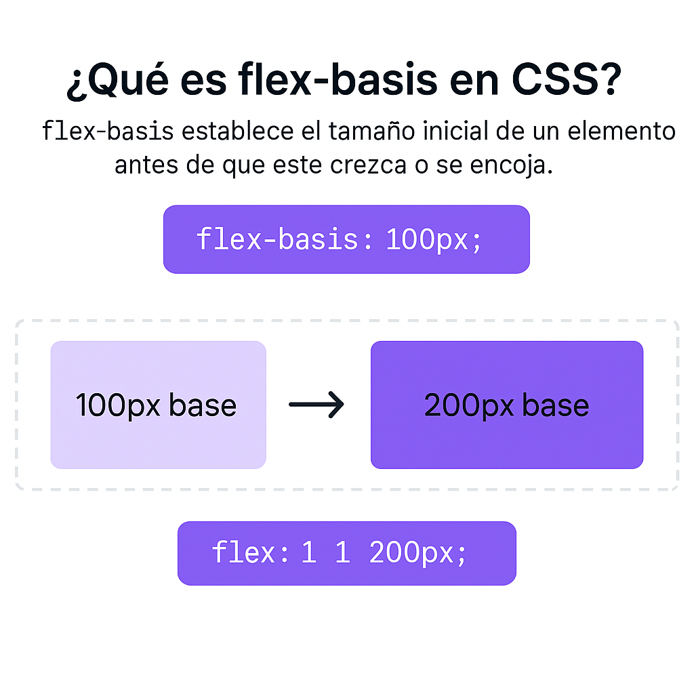

Flexbox (Flexible Box Layout) es un modelo de diseño que permite alinear, distribuir y organizar elementos dentro de un contenedor de forma eficiente, ya sea en fila o columna.
display: flex → Activa Flexbox en el contenedor.flex-direction → Define la dirección (row o column).justify-content → Alinea horizontalmente (eje principal).align-items → Alinea verticalmente (eje cruzado).flex: 1 en CSS?flex: 1 es un atajo de:
flex: 1 1 0%;
flex-directionDefine la dirección principal del eje:
row (por defecto) → de izquierda a derechacolumn → de arriba hacia abajorow:
column:
justify-contentControla la alineación horizontal (eje principal):
justify-content: space-between;
align-itemsAlinea elementos en el eje vertical (cuando están en fila):
align-items: flex-start; alinea todos arriba
Comparamos tres cajas con distintos valores de flex:
La suma de las proporciones es 1 + 2 + 3 = 6 partes
Cuando usas flex: 1, flex: 2, y flex: 3, estás indicando proporciones:
1 + 2 + 3 = 6 partes del espacio total.
Cada caja toma la parte proporcional del total de espacio disponible.
flex-directionrow – Dirección horizontal (por defecto).row-reverse – Horizontal invertida.column – Dirección vertical.column-reverse – Vertical invertida.justify-contentflex-start – Al inicio del eje.flex-end – Al final del eje.center – Centrado.space-between – Espacio entre elementos.space-around – Espacio alrededor de cada elemento.space-evenly – Espacio igual entre todos.align-items y align-contentalign-items:
stretch – Estira los elementos (por defecto).flex-start – Alinea arriba.flex-end – Alinea abajo.center – Centra verticalmente.baseline – Alinea a la línea base del texto.align-content: (solo si hay múltiples líneas)
stretch, flex-start, flex-end, center, space-between, space-aroundflex-wrapnowrap – Todo en una línea (por defecto).wrap – Permite que los elementos bajen de línea.wrap-reverse – Permite bajar pero en orden inverso.flex-basis
flex-basis
Define el tamaño base inicial del elemento antes de crecer o encogerse.
align-selfPermite alinear un solo elemento de forma diferente al resto.
display: flex – Activa el modelo Flexbox.flex-direction – Dirección del eje principal (row, column).justify-content – Alineación horizontal (eje principal).align-items – Alineación vertical (eje cruzado).align-content – Alineación de múltiples líneas.flex-wrap – Permite saltar a nuevas líneas.flex-grow – Permite que el elemento crezca.flex-shrink – Permite que el elemento se encoja.flex-basis – Tamaño base inicial del elemento.flex – Atajo de grow, shrink y basis.align-self – Alineación individual (sobrescribe align-items).order – Cambia el orden visual del elemento.Ahora sabes cómo usar flex: 1 y cómo afecta el espacio en Flexbox.
Presentación con ayuda de Gabo 🧠 para Delia 💻